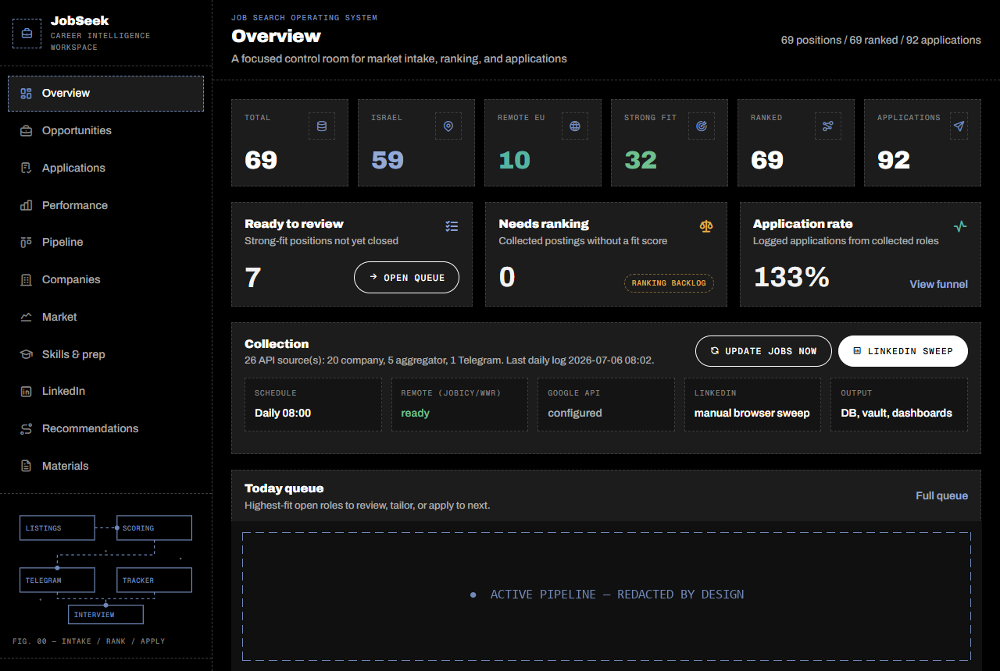
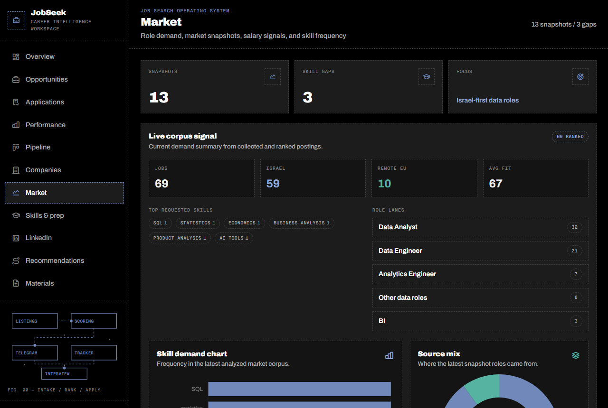

JobSeek.
A job search, treated as a data product.
INTAKE → RANK → DELIVER → APPLY → PREP · RUNS DAILY AT 08:00
A job search is an unpaid analytics job: dozens of sources, unstructured postings, a funnel with stages, decisions under uncertainty. Most people run it on browser tabs and vibes. I built the pipeline instead — every posting collected, normalized, scored against my profile, delivered to Telegram, tracked through the funnel, and fed into interview preparation. If it happens twice, automate it — and a job search is the same loop hundreds of times.
A FastAPI + HTMX web portal over the SQLite core — twelve sections covering opportunities, applications, funnel performance, market stats, companies, prep and materials. These are real screenshots of the running system; the active pipeline block is redacted because where I’m interviewing is nobody’s business until it’s a signed offer.


- An honesty gate. Every CV and interview-story claim is validated against an evidence manifest built from my real work history — the system literally refuses to let me claim tools I didn’t use where I didn’t use them.
- Deterministic CV tailoring. Per-position CVs reorder and emphasize only real content — no generative rewriting of facts.
- Daily automation with restraint. Scheduled 08:00 collection across ~26 sources, robots.txt respected, database snapshot before every run — and the backups have already paid for themselves.
- Market-split ranking. Israel-first scoring with a separate remote lane, so remote roles never drown under local volume.
- A spaced-repetition prep engine. Practice attempts are logged; weak topics × market demand × interview proximity produce an adaptive study plan and briefing per callback.
- Human/machine field ownership. Vault notes and DB sync without ever overwriting each other’s lanes.
Why it stays private: this system knows everything about my search — targets, funnel, briefs, evidence. The code and the data never leave my machine. What you’re reading is the tour, and that’s the deliberate trade: the discipline is public, the data isn’t.
Same brain, different domain.
THE ANALYST VAULT IS THE SAME DISCIPLINE, POINTED AT ANALYSIS ITSELF